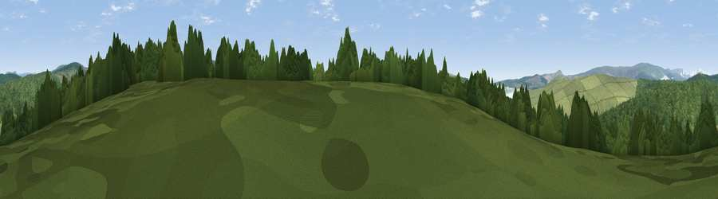

Viewpoint c11677_7031
#38960 in England · top 72% of its area beats it · —Where it is
The exact computed spot (NY 51575 83875). Click the marker for map links.
The view, rendered

A 360° render of this exact spot computed from the terrain model, tree cover and land cover — summer colours, afternoon light, calibrated against photographs of famous viewpoints. Real trees, hedges and buildings will differ in detail.
The panorama
Grey silhouette: terrain skyline in each direction (720 bearings, Earth curvature and refraction included). Dashed green: skyline with trees (+15 m) and buildings (+8 m) as obstacles. Blue strip: how far the ground is visible on each bearing.
Where the view opens
Wedge length = distance to the farthest visible ground on that bearing (vegetation-aware). Rings at 10, 25 and 50 km.
What fills the view
61% woodland · 39% grassland
Angular shares of the visible panorama (visual magnitude), not map area. Landscape diversity 0.29 (0–1 Shannon).
Key numbers
More beautiful places nearby
The staircase of upgrades: each row has a higher view potential than everything closer. Driving times are estimates from straight-line distance, calibrated against real road routing — check an actual route before setting out.
| Place | Direction | Drive | Score |
|---|---|---|---|
| Viewpoint c11671_7084 | E · 3 km | ~7 min | 65.8 |
| Viewpoint c11631_6984 | SW · 3 km | ~8 min | 67.3 |
| Glendhu Hill | ENE · 6 km | ~12 min | 74.9 |
| Viewpoint c11644_7156 | ESE · 6 km | ~14 min | 80.8 |
| Viewpoint c11995_7247 | NNE · 19 km | ~33 min | 82.1 |
| Viewpoint c12273_7856 | NE · 51 km | ~72 min | 83.7 |
| Viewpoint c12396_7887 | NE · 56 km | ~78 min | 85.7 |
| Ullock Pike | SSW · 61 km | ~84 min | 89.4 |
55.14684, -2.76131 · source: screening · position refined by local search. Computed location — check access rights before visiting.